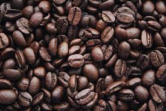

BOGOTÁ, 6 Fev - A produção de café da Colômbia em janeiro caiu 34% para 893.000 sacas de 60 kg, ante 1,35 milhão de sacas registradas no mesmo mê...

Um estudo publicado nesta segunda-feira (9) indicou que o consumo de duas a três xícaras de café por dia pode proteger contra a demência, reduzindo em 18% o risco de desenvolver a doença e retardando o declínio cognitivo.